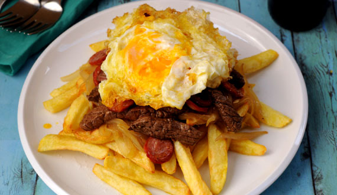

Chorrillana

Descripción:
El término chorrillana o chorrellana se refiere a una preparación de las gastronomías peruana y chilena.
La referencia más antigua de su origen se sitúa en el balneario de Chorrillos durante los inicios de
la inmigración asiática en Sudamérica, siendo los cocineros orientales los que trajeron la técnica
culinaria de saltado en wok, adaptándola a los ingredientes locales disponibles
Ingredientes :
- 2 cebollas en corte pluma
- 2 cucharadas de Salsa de Soya
- 600g de posta negra cortada en tiras
- 3 cucharadas de Salsa Inglesa
- 1 1/2 cucharadas de Condimento para Carne
- 1 diente de ajo picado finito
- 1/2 cucharadita de Merquén (opcional)
- chorizos picados en redondelas de 1/2 cm
- 12 papas peladas y cortadas en palos
- aceite para freír
- Sal de Mar
- Mix de Pimientas
Preparación :
- Calentar 1 1/2 cucharadas de aceite en un sartén, agregar la cebolla y cocinar hasta que esté blanda y dorada. Agregar la Salsa de Soya Gourmet y cocinar por 2 minutos más o hasta que la cebolla esté caramelizada. Sacar la cebolla y reservar (mantenerla caliente). No lavar el sartén se usará para cocinar la carne.
- Mezclar la carne picada con la Salsa Inglesa , Condimento para Carne , Merquén y el diente de ajo. Sobar la carne con las manos para integrar los sabores. Calentar una cucharada de aceite en el sartén y cocinar la carne, revolviendo, hasta que esté cocida y dorada. Sacar la carne del sartén y reservar caliente. En el mismo sartén agregar el chorizo y cocinar hasta que esté dorado por ambos lados. Juntar con la carne y mantener caliente.
- Para las papas fritas: calentar bastante aceite en una olla ancha o sartén hondo. Una vez caliente el aceite, agregar las papas y cocinar hasta que estén levemente doradas. Sacar del aceite y dejar sobre toalla de papel. Sazonar a gusto con Sal de Mar y Mix Pimientas . Mientras tanto, cocinar 4 huevos fritos.
- Para armar los platos, dividir las papas entre 2 platos grandes. Agregar la cebolla caramelizada, luego la carne con el chorizo para terminar con 2 huevos por plato.